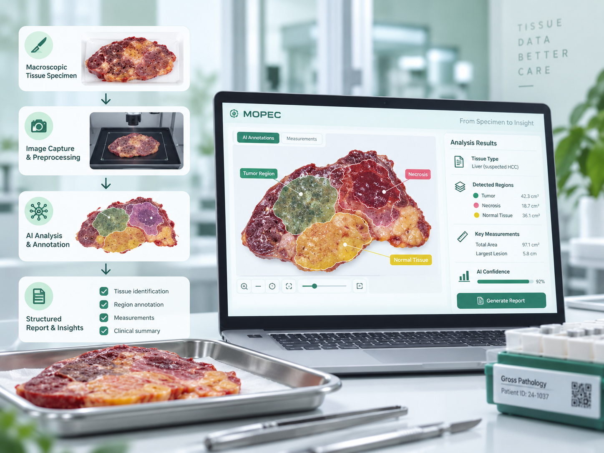
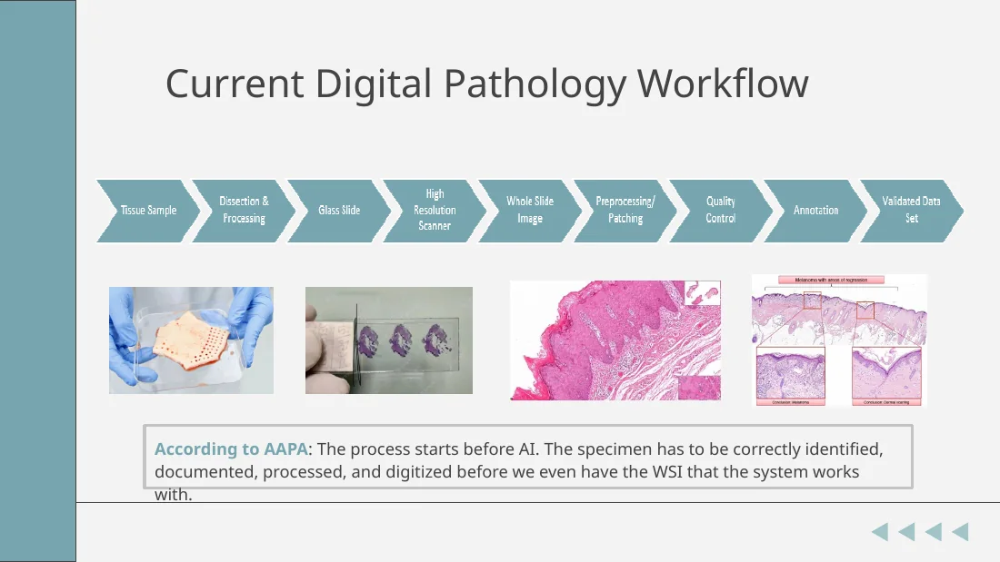
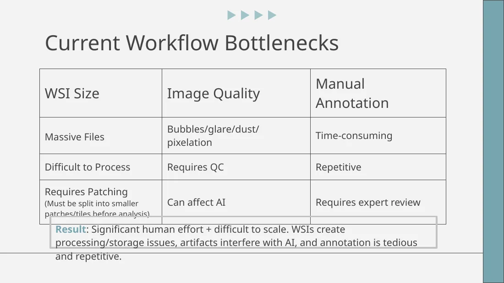
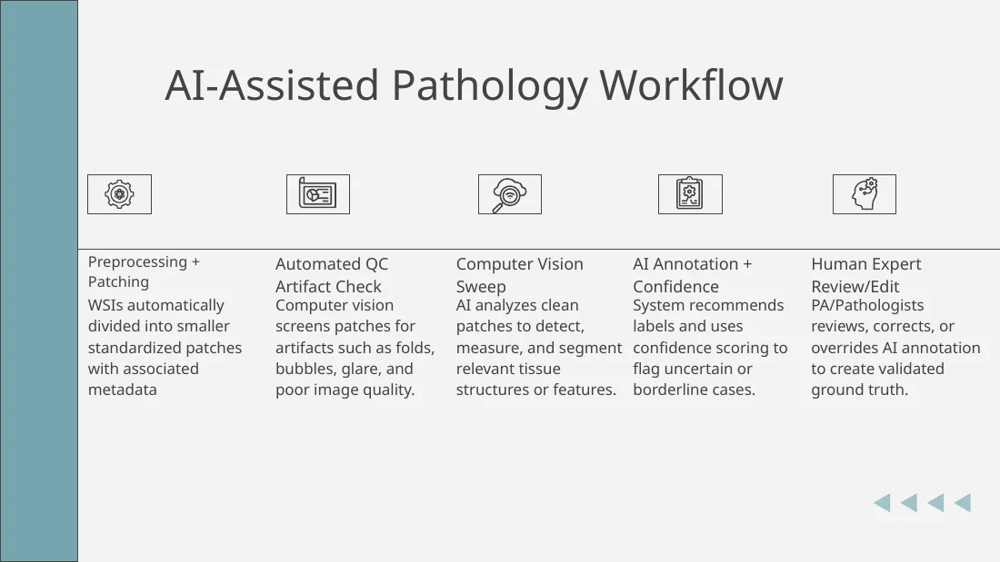
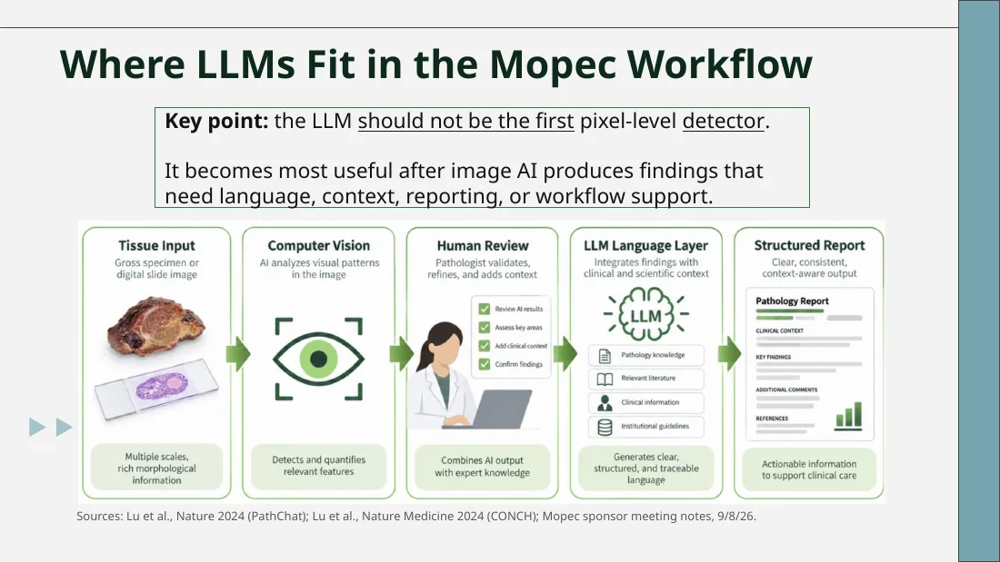
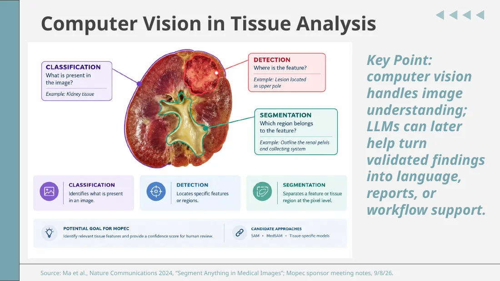

Current stage
The project is still in the research and workflow-definition phase, so the focus is on building a strong technical foundation rather than claiming a finished clinical system.
Company-Sponsored Senior Project
Early-stage senior design work exploring AI support for future gross-tissue imaging and pathology workflows.

The project is still in the research and workflow-definition phase, so the focus is on building a strong technical foundation rather than claiming a finished clinical system.
Digital pathology workflows can involve very large images, image-quality artifacts, manual annotation, and significant human review.
Explore where image preprocessing, quality control, model analysis, confidence scoring, and expert review could fit into a future workflow.
Training, validation, and test planning; dataset review; preprocessing and QC; annotation and review.
The project framing keeps expert review central rather than treating AI as a replacement for pathology expertise.
Medical imaging, quality-minded workflow design, documentation, research synthesis, and team collaboration.
Project archive
This material stays inside the case study so the main portfolio pages remain clean.




